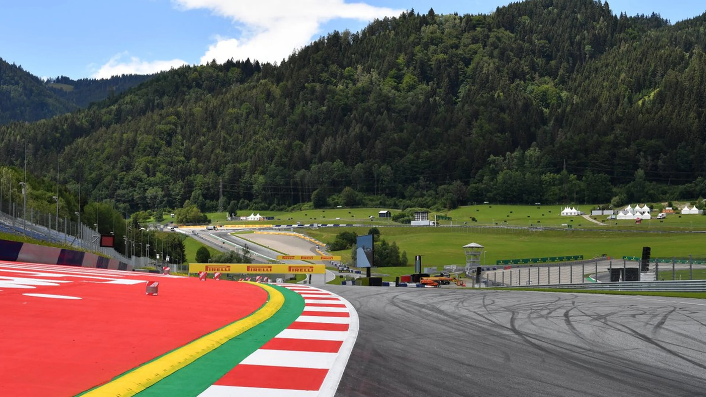

Todo lo que necesitás saber para disfrutar del Gran Premio de Austria
Este domingo 29 de junio a partir de las 11:00h del horario argentino se disputará el Gran Premio de Austria. Esta es la 11° carrera del año y Red Bull buscará una victoria contundente en casa con su piloto estrella, Max Verstappen.
La cita será en el circuito Red Bull Ring que está ubicado en Spielberg, Austria. Esta
pista es la casa de Red Bull, la escudería que representan Max Verstappen y Yuki
pista es la casa de Red Bull, la escudería que representan Max Verstappen y Yuki
carrera. Además, cuenta con 71 vueltas y 3 zonas de DRS: una en la primera curva,
otra en la tercera y la última se encuentra en la décima curva.
El estreno en Fórmula 1 fue en 1970 y el ganador fue Jacki Ickx a bordo de un
Ferrari, es así como este piloto es conocido como el primer ganador del Gran
Premio de Austria.
A su vez, en lo que a pilotos se refiere, Verstappen es el máximo ganador en este
circuito. El cuatro veces campeón del mundo logró quedarse con la victoria en
cuatro oportunidades diferentes, siendo en 2023 su conquista más reciente.
Sumado a esto, dos ingleses tienen protagonismo en esta carrera: El primero es
Lewis Hamilton, el piloto inglés alcanzó la vuelta más rápida en 2017 con una marca
de 1:07:411 y, por último George Russell. El ganador del Gran Premio de Canadá el
pasado 15 de junio es también el actual ganador de este GP, por lo que el piloto de
Mercedes llega con una motivación extra a esta carrera.
Con la primera vuelta en marcha, los accidentes no cesaron y un choque en la curva
3 entre Max Verstappen y Kimi Antonelli provocó la bandera amarilla y terminó con
el cuatro veces campeón del mundo y el rookie de Mercedes fuera de la
competición. El incidente ayudó a Piastri a trepar desde la tercera a la primera
colocación y a Colapinto a subir a la 11° posición.
¿Cómo le fue a Franco en Austria?
El piloto argentino tiene antecedentes en este trazado en Fórmula 2 y Fórmula 3.
En F3 de 2022, Franco logró la tercera colocación en la carrera Sprint y la séptimar
en la Future Race mientras que en la edición de 2023 quedó 13° en la Sprint y cuarto
en la Future Race.
En F2, logró el puesto 11 en la Sprint y un sorprendente segundo puesto en la Future Race.
¿Cómo está la tabla de pilotos?
Pese a no haber ganado la carrera anterior, Oscar Piastri sigue muy cómodo en la
primera posición del campeonato de pilotos con puntos, seguido del britanico Lando
Norris y el neerlandés Max Verstappen.
CRONOGRAMA DEL FIN DE SEMANA DE CARRERA
La emoción arrancará este viernes 27 con la Prácticas Libres 1 que serán entre las
08:30 y 09:30 hrs del horario argentino y las Prácticas libres 2, que se desarrollarán
entre las 12:00 y 13:00 hrs.
La actividad seguirá el sábado 28 cuando se realicen las Prácticas Libres 3 a las
07:30 hrs y la Clasificación, cuyo horario estará comprendido entre las 11 y 12 hrs.
Por último, el domingo será la gran carrera a partir de las 11:00 hrs y podrás vivir
esta y las demás instancias del cronograma por Disney + premium y Fox Sports.